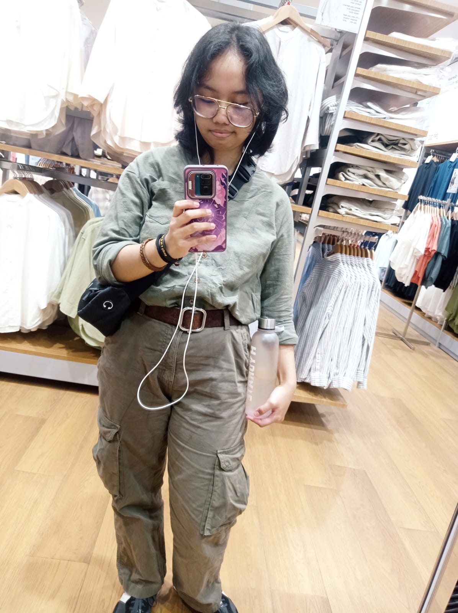

Welcome!I'm Stacy Valerie Tirza RombepajungIni adalah blog pribadi saya. Saya adalah mahasiswa di Universitas Sam Ratulangi di Program Studi Teknik Informatika Angkatan 2024. Building this website is a way for me to learn HTML and to develop my skills as a programmer. Thanks For Visiting! |
 |